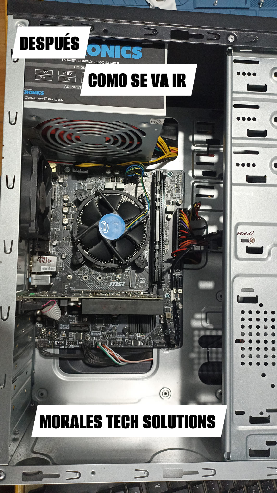

Revitaliza tu CPU Lenovo Intel Core i3 con MORALES TECH SOLUTIONS
¿Tu computadora está funcionando más lento de lo habitual? Con nuestro servicio especializado, puedes mejorar el rendimiento y prolongar la vida útil de tu CPU.
Servicios Realizados:
- Limpieza Profunda: Realizamos una limpieza completa de los ventiladores, fuente de poder, placa madre y el case. Eliminamos todo el polvo y la suciedad para asegurar un rendimiento óptimo de tu equipo.
- Eliminación de Óxido: Tratamos los componentes del disipador para eliminar el óxido, mejorando la conducción térmica y garantizando un funcionamiento más eficiente.
- Repotenciación con SSD: Reemplazamos el antiguo disco HDD, que estaba ralentizando tu equipo, con un moderno disco SSD. Esto mejora significativamente la velocidad de arranque y carga de aplicaciones, dándole nueva vida a tu CPU.
- Pasta Térmica de Alta Calidad: Aplicamos las mejores pastas térmicas, como NOCTUA NT-H1 y Artic MX-4, para asegurar una excelente disipación del calor.
¡Haz que tu equipo funcione como nuevo! Mejora el rendimiento de tu CPU y evita el sobrecalentamiento.